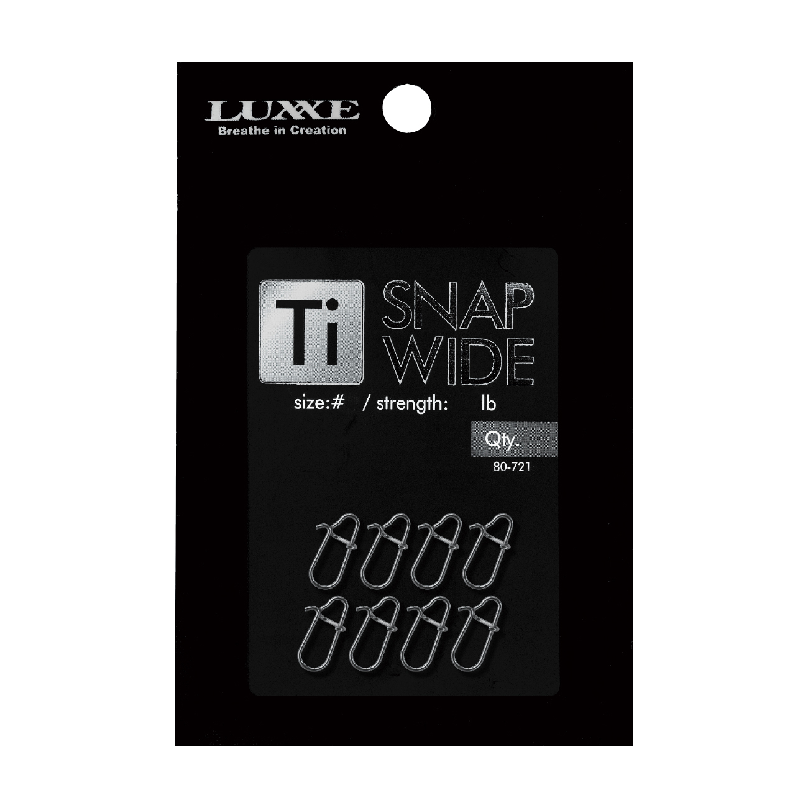
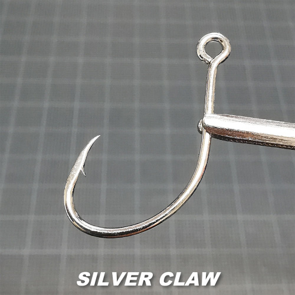
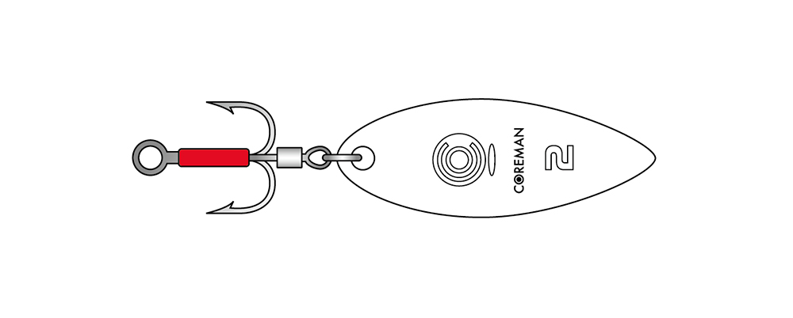

ラグゼ Ti スナップワイド
（LUXXE Ti SNAP WIDE）
ラグゼ Ti スナップワイド（Ti SNAP WIDE）は、がまかつのブランド「LUXXE（ラグゼ）」のチタン製スナップです。
チタン形状記憶合金を使ったラウンドスナップで、開閉を何度繰り返してもヘタりにくく、海で使っても錆びにくいのが最大の魅力です。

画像出典:がまかつ公式HP
スペック
- メーカー
- がまかつ（ラグゼ）
- 品番
- 80-721
- タイプ
- ラウンドスナップ
- 素材
- チタン形状記憶合金
- サイズ
- #000／#00／#0／#1／#1.5／#2
- 強度
- 25lb（#000）〜138lb（#2）
- 入数
- 8個
- 価格
- 450円（税抜）
▼今すぐチェック

Ti スナップワイドの特徴
チタン形状記憶合金で、ヘタりにくく錆びにくいラウンドスナップ
-
開閉を繰り返してもヘタりにくい
チタン形状記憶合金の高い復元力で、ルアー交換で何度も開け閉めしても形が崩れにくい。ステンレスのスナップのように、使ううちに開きやすくなるのを防げる。
-
海でも錆びにくい高防錆
チタンは錆びにくい素材なので、海水で使うソルトの釣りでも安心。釣行後のメンテナンスの手間も減らせる。
-
サイズごとに必要十分な強度
#000から#2まで、各サイズで必要十分な強度を確保したバランス設計。強度はISO 2062に準拠して測定されている。ライトゲームからショアジギング、オフショアまで幅広い釣りで使える。
Ti スナップワイドの使い方
リーダーの先に結んで、ルアーのアイに掛けて使います。ルアーの重さと使うラインの強さに合わせて、強度が足りるサイズを選ぶのが基本です。
ラウンド形状なので、ルアーのアイが中で自由に動き、ルアー本来のアクションを邪魔しにくくなります。ルアーを交換する時は、閉じた後にロックがしっかり掛かっているか確認しましょう。
Ti スナップワイドがおすすめの人
ルアー交換の多いシーバスやライトゲーム、錆びが気になるソルトの釣り全般におすすめです。
開閉を繰り返してもヘタりにくいので、スナップが開いてルアーを失うトラブルを減らしたい人にぴったりです。
ステンレスのスナップより価格は高めですが、長く使えるので、交換の手間やルアーの紛失を考えると十分に元が取れます。ルアーをなくさずに投げ続けられれば、そのぶん釣れるチャンスも増えます。
ワンポイント
サイズ選びに迷ったら、ライトゲームは#000〜#00、シーバスやエギングは#0〜#1、ショアジギングなど重いルアーは#1.5〜#2が目安です。強度がラインより低くならないサイズを選びましょう。
Ti スナップワイドのサイズと強度
| サイズ | 強度（lb／kg） | 全長・線径・重さ |
|---|---|---|
| #000 | 25lb／11.2kg | 7.0mm・0.4mm・0.02g |
| #00 | 55lb／24.7kg | 9.0mm・0.5mm・0.04g |
| #0 | 75lb／33.7kg | 11.0mm・0.6mm・0.08g |
| #1 | 84lb／37.8kg | 12.0mm・0.65mm・0.10g |
| #1.5 | 93lb／41.8kg | 13.5mm・0.7mm・0.12g |
| #2 | 138lb／62.1kg | 15.0mm・0.8mm・0.18g |
どのサイズも8個入りで450円（税抜）です。強度はISO 2062に準拠した測定値です。同じチタン形状記憶合金のスプリットリング「Ti スプリットリング」（#3〜#10）もあります。
▼今すぐチェック
Ti スナップワイドとあわせてチェックしたいアイテム
-

シルバークロー コアマン 詳細はこちら＞鉄板バイブなどに付けるシングルフック。フックの交換とあわせて見直したい時に。
-

ブースターシステム コアマン 詳細はこちら＞ブレード一体型のフック。ルアーにブレードのアピールを足したい時に。
-
 ルアーケース リバーシブル140
アイマ
詳細はこちら＞
ルアーケース リバーシブル140
アイマ
詳細はこちら＞
両面に収納できるルアーケース。スナップ付きのルアーの持ち運びに。